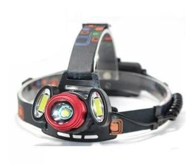
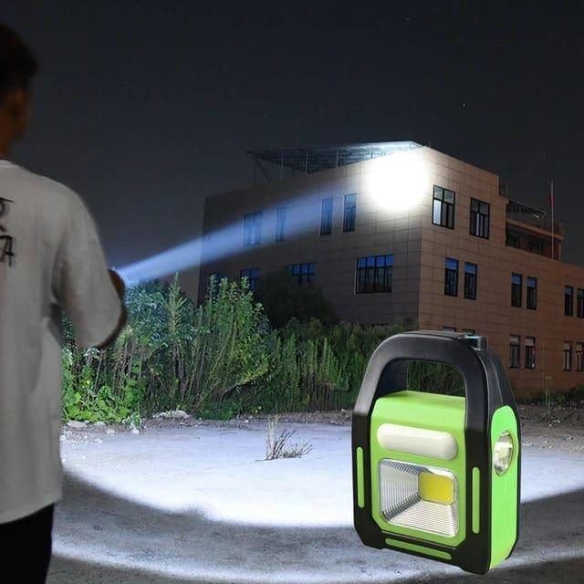

Anyone who has lived in Pakistan knows the moment: the fan slows, the lights die, and the house goes quiet except for someone calling out, "Bijli chali gayi." Load-shedding schedules vary by city and season, and unscheduled outages happen too, especially during storms. Many homes have a UPS or solar setup now, but even then there are moments when the backup fails or does not reach every room.
A small, well-organised emergency light kit takes away much of the stress. It costs little and saves a lot of fumbling in the dark.
Why a kit, not just a torch
Most families own a torch. The problem is that nobody knows where it is when the lights go out, its batteries are dead, or a child has taken it to play. A kit means a fixed place, a few reliable lights and a habit of keeping them charged.
What to include
- A rechargeable headlamp: hands-free light is far more useful than people expect when cooking, changing a nappy or checking the breaker board.
- A solar or multi-mode flashlight: one that can charge from sunlight is handy during long outages when the UPS is drained too.
- Mini keychain torches: keep one on each set of house keys so you can find the lock and the stairs at night.
- A rechargeable lantern for the room where the family sits together.
- A power bank, charged, for phones and USB lights.
- A small first-aid pouch, spare batteries for any battery-powered items, and a list of important phone numbers on paper.
Pick a fixed place
Store the kit somewhere central and easy to reach in the dark, like a drawer near the main door or a shelf in the lounge. Tell every family member where it is. In a two-storey house, a second smaller kit upstairs is worth having.

Keep everything charged
Rechargeable lights only work if they are charged. Make it a weekly routine, perhaps every Friday, to plug in the headlamp, lantern and power bank. Solar lights can sit on a sunny windowsill during the day. If a light has a battery indicator, glance at it during the routine.
Safety during long outages
Candles are traditional, but they are a fire risk around curtains, children and pets. LED lights are safer and do not heat up a hot summer room. If you do use candles, keep them in a proper holder on a stable surface and never leave them unattended.
In summer, outages also mean heat. Keep a bottle of water in the fridge for each family member and avoid opening the fridge often during long outages so food stays cold.
Lights for specific jobs
Think about who needs light during an outage and for what. Students studying for exams benefit from a bright desk or clip light. Elders walking to the washroom at night need a light near the bed. The cook needs hands-free light in the kitchen. Matching lights to tasks means fewer arguments about who has the torch.

Do not forget the fridge and the water tank
Lights are only part of the picture. Before a known long outage, fill a few bottles of drinking water in case the motor cannot run and the tank empties. Keep ice packs in the freezer; they help keep the fridge cold longer. If you rely on an electric pump, make a habit of topping up the overhead tank whenever power returns. These small routines turn a stressful evening into a mild inconvenience.
Where to find practical lights
Trenducts stocks rechargeable headlamps, solar flashlights and compact keychain torches among its camping and utility products, delivered across Pakistan. Choose a mix rather than several of the same type.
A two-minute monthly check
- Is everything in its place?
- Is everything charged?
- Does everyone know where the kit is?
With those answered, the next time the fan slows and the house goes dark, you will reach straight for the drawer instead of stumbling around looking for a phone torch.